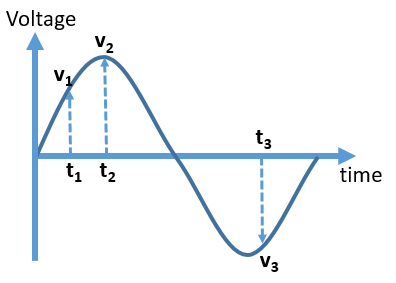
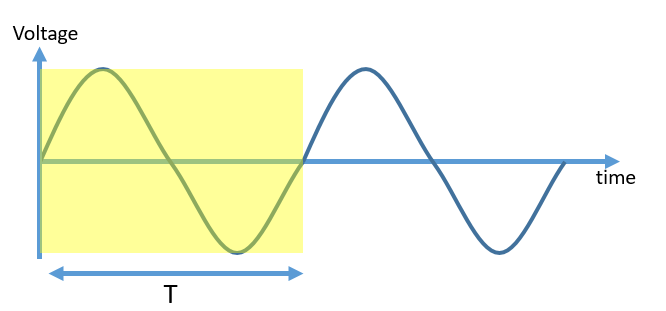
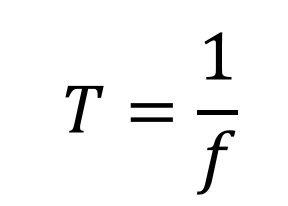
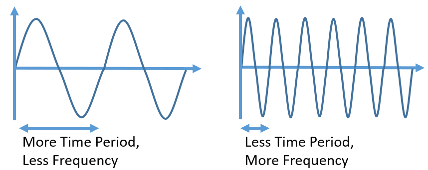
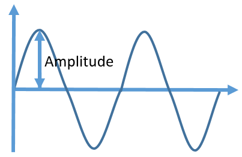

HOME BLOG EBOOKS ABOUT CONTACT SHOP
The value or the magnitude of an alternating quantity at a particular instant of time is known as its instantaneous value. For example, in the Voltage-time waveform shown below, the instantaneous values of voltage at instants t1, t2, t3 are v1, v2 and v3 respectively. Instantaneous quantities are always denoted by small letters (v, e, i etc.)

A Cycle is a portion of a waveform, which when repeated makes up the entire waveform. In the figure below, the shaded portion is the only unique part of the entire waveform, rest of the waveform is just repetitions of this portion. A more formal definition would be: an alternating quantity is said to have completed a cycle when it goes through the entire range of positive and negative instantaneous values without reoccurrence. Obviously it goes without mentioning that the concept of a cycle is only relevant to periodic waveforms like the sine waveform. Do note that a cycle needn’t start from zero value and end at zero value. It’s only for convenience, we assume the cycle starts at zero. For example, Vmax to the next Vmax is also a cycle.

The time period is the time taken by an alternating quantity to complete one cycle. In other words, a cycle of an alternating quantity repeats after every T seconds, where T denotes the Time period.
The number of cycles completed by an alternating quantity in a second is known as its frequency. It’s measured in cycles per second or Hertz. So a 60 Hz supply means that the waveform complete 60 cycles in a second. It is denoted as f. Did you notice something interesting?? The definitions for Frequency and Time Period were kind of the reverse of each other. One is the time taken for a cycle and other is the number of cycles per time. That’s because Frequency and Time Period are inversely related quantities i.e.

So as the frequency increases, time period decreases and vice versa.

Amplitude is the maximum value (positive or negative) attained by an alternating quantity during its cycle.
